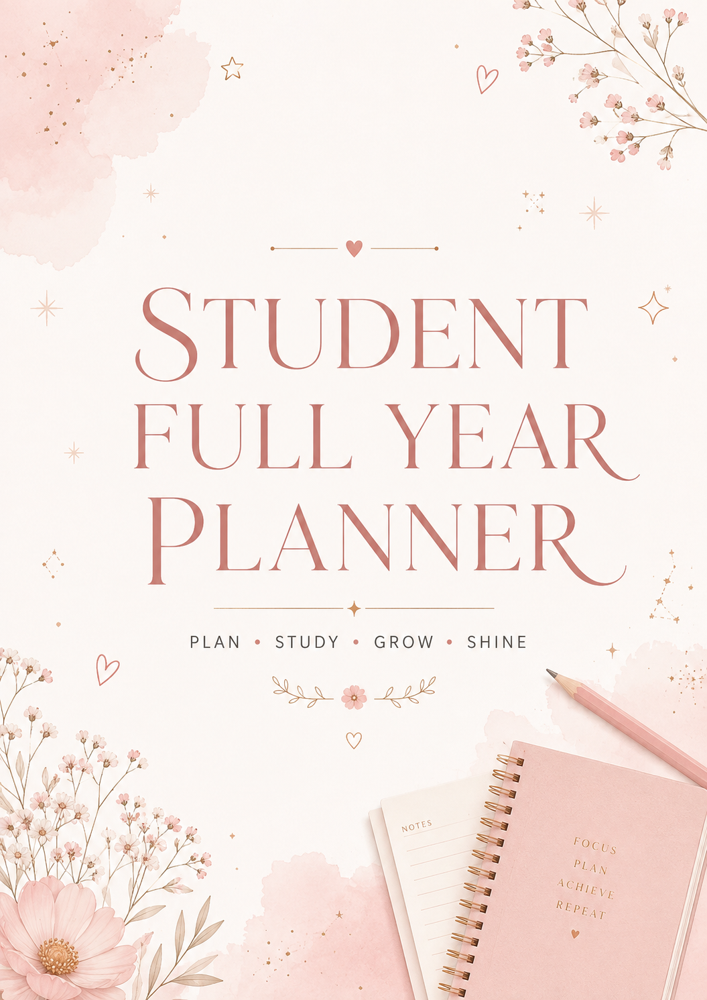

Student Full Year Planner: One Planner for Your Whole Academic Year

Every September (or whenever your term starts), the same choice comes up: pick a new planner for the term, or find something that can actually carry you through the whole year. Most students default to the first option without really thinking about it — and end up buying, setting up, and abandoning three or four planners before summer.
A full year student planner solves that by design. Instead of restarting every few months, you get one continuous system from the first week of the year to the last.
The Hidden Cost of Switching Planners Every Term
Switching planners doesn't just mean buying a new one. It means re-learning a new layout, losing whatever momentum you'd built, and — most importantly — losing the long view. Goals you set in September rarely survive the jump into a brand new January planner, simply because there's no page connecting the two.
What Makes a Full Year Layout Work
- Month-by-month structure — the year is broken into manageable chunks, so it never feels like one overwhelming block of time.
- Consistent weekly pages — the same layout from week one to week forty, so there's nothing new to learn halfway through.
- Long-term goal tracking — space to track goals that actually take a full year to reach, not just a term.
- Room for the full picture — assignments, exams, and personal goals living in the same system instead of scattered across old, abandoned planners.
Full Year vs. Termly: Which One Fits You
If your course load resets every term with little continuity, a termly planner can work fine. But if you're tracking a dissertation, a multi-term project, or goals that span the whole academic year, a full year planner keeps that thread unbroken. It's the difference between restarting a story every few chapters and reading it straight through.
If your days are shaped more by daily routine and self-care than academics specifically, our My Life Planner guide covers a layout built for that instead.
How to Start Using It, Even Mid-Year
You don't need to start in September for a full year planner to work. Open it to the current month, fill in what's ahead for the next few weeks, and let the rest build naturally from there. There's no "catching up" required — each month stands on its own.
Frequently Asked Questions
What is a full year student planner?
A full year student planner is a single planner designed to cover an entire academic year, rather than resetting or needing to be replaced every term or semester.
Why is a full year planner better than switching planners each term?
Switching planners each term means losing continuity, re-learning a new layout, and often losing track of long-term goals. A full year planner keeps everything in one continuous system from the first week to the last.
Is a full year planner harder to keep up with than a termly one?
Not if it's structured well. A good full year planner breaks the year into months and weeks so it never feels overwhelming, even though it covers a longer span.
Who benefits most from a full year student planner?
Students with a full course load across multiple terms, or anyone who wants to track long-term academic goals alongside daily assignments without losing the bigger picture.
How do I start using a full year planner partway through the year?
Start from the current month rather than trying to backfill earlier pages. A full year planner works fine starting mid-year, since each month and week stands on its own.
Explore the Student Full Year Planner →